🔍 Investigació Municipal · Algemesí 2027DOSSIER OBERT
Els teus diners se'n van fora.
El govern de PP i
VOX adjudica obres a empreses de fora,
abandona tones d'ajuda de la DANA en un descampat i retalla a la meitat
el pressupost de les Muixerangues.
Algemesí mereix més.
Set casos reals amb proves fotogràfiques i documents públics. Tretze fracassos documentats del govern PP-Vox d'Algemesí.
Llig cada cas i treu les teues pròpies conclusions.
Responsables del govern municipal des de 2023
PP+VOX
Alcaldia en mans del PP · regidories clau cedides a VOX
~1M€obres a empreses de fora
600K€subvencions perdudes
−50%pressupost muixerangues
4 anyssense transparència
PPGESTIÓ DANA · ESCÀNDOL
ARXIU INCORPORAT · DONACIONS DANA
PSPV-PSOE Algemesí · Nov 2025Novembre 2025
"Denuncien l'abandó de tones d'ajuda de la DANA en una parcel·la
municipal governada per PP-Vox"
El PSPV d'Algemesí va denunciar públicament que tones de material d'ajuda
humanitària destinades a les víctimes de la DANA van ser emmagatzemades
en una parcel·la municipal i mai no van arribar als afectats.
Menjar, roba, productes de primera necessitat — tot abandonat al sol i a la pluja.
L'alcalde del PP es va negar a donar explicacions al Ple.
On va anar l'ajuda? L'alcalde es va negar a explicar-ho al Ple.
GOVERN D'ESPANYA · PSOE
Inversió en reconstrucció DANA — dades oficials actualitzades a 9 de març de 2026
16.600 M€ — Recursos totals mobilitzats pel Govern d'Espanya
9.300 M€ — Import total ja executat (ajudes, financiació i actuacions directes)
7.772 M€ — Abonats en ajudes i subvencions a persones i entitats afectades
358.122 — Ajudes i subvencions concedides a famílies, autònoms i empreses
1.745 M€ — Fons per a reconstrucció d'infraestructures de 78 ajuntaments afectats
347 M€ — Ajudes directes a empreses (267 M€) i autònoms (80 M€) via Agència Tributària
4.307 M€ — Indemnitzacions del Consorci de Compensació d'Assegurances (99% tramitades)
33.885 — Militars mobilitzats + 9.728 agents de Policia i Guàrdia Civil
Mentre el Govern d'Espanya (PSOE) mobilitzava 16.600 milions d'euros i ja n'ha executat 9.300 M€,
l'Ajuntament d'Algemesí (PP-Vox) abandonava tones d'ajuda en un descampat
i no activava cap pla d'emergència local.
Proves fotogràfiques reals. Material humanitari destinat a les víctimes de la DANA.
Mai va arribar als afectats.
PPEMERGÈNCIAGESTIÓ DANA · RAVAL D'ALGEMESÍ
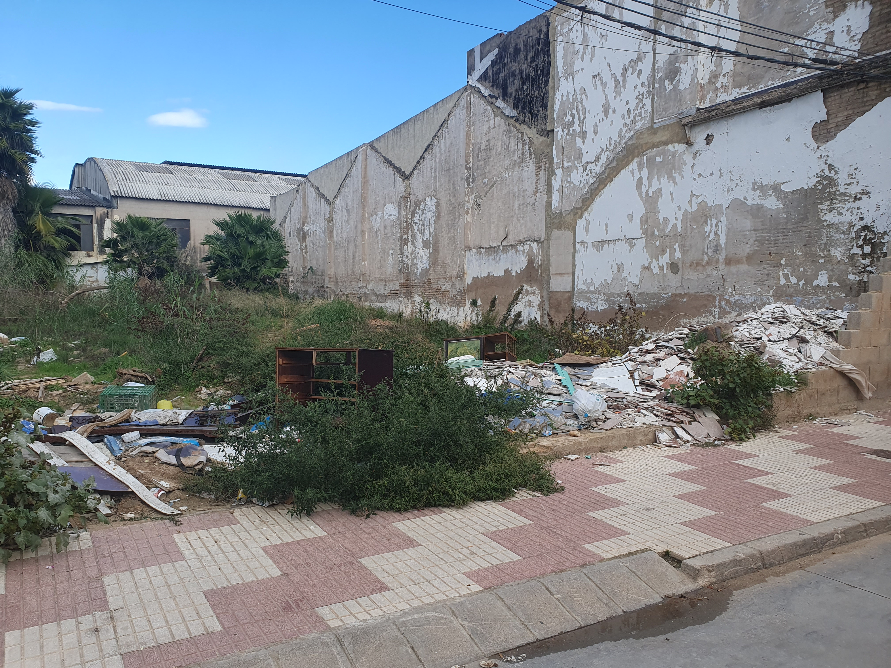
ARXIU · RAVAL D'ALGEMESÍ
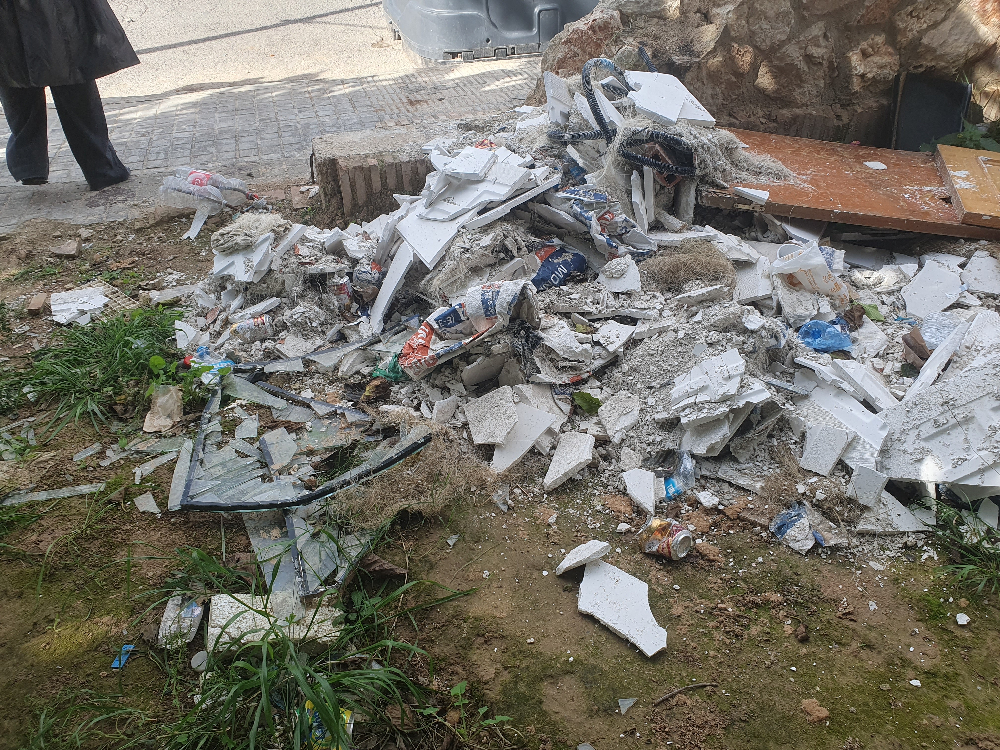
ARXIU · RAVAL DANA
PSPV-PSOE Algemesí · Veïns del RavalOctubre-Novembre 2024
"El Raval d'Algemesí, abandonat després de la DANA:
setmanes sense ajuda municipal"
Quan la DANA va colpejar Algemesí l'octubre de 2024, el barri del Raval va ser
un dels més afectats. Carrers inundats, soterranis plens de fang, vehicles
arrossegats. La resposta de l'Ajuntament va ser inexistent durant les
primeres setmanes crítiques. Els veïns es van organitzar sols amb pales
i escombres. El govern municipal no va activar cap pla d'emergència local,
no va habilitar punts d'acollida ni va coordinar la distribució d'aliments.
Van ser els propis veïns qui van netejar el Raval.
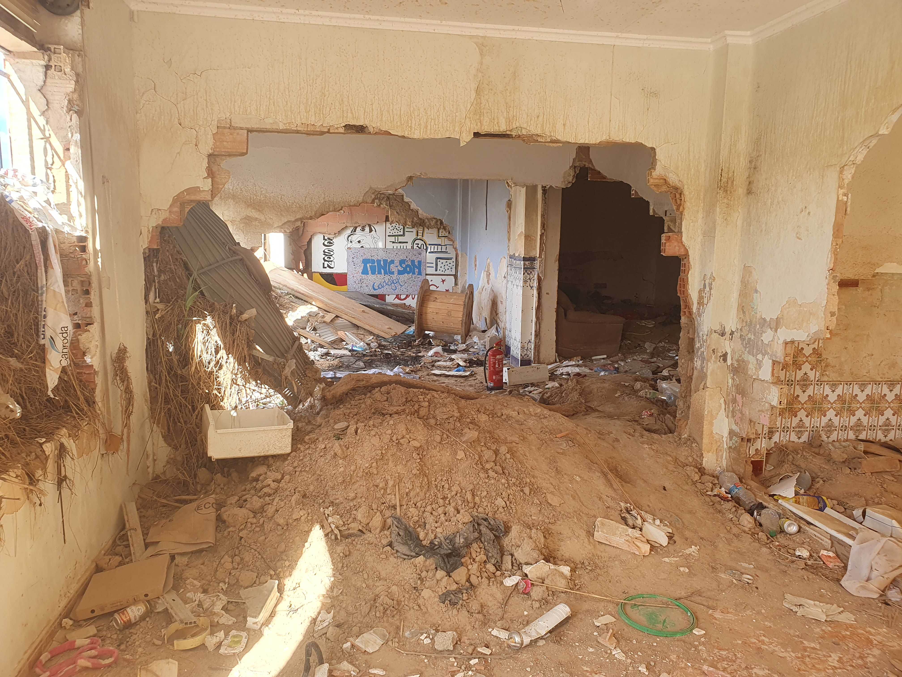
Casa trencada
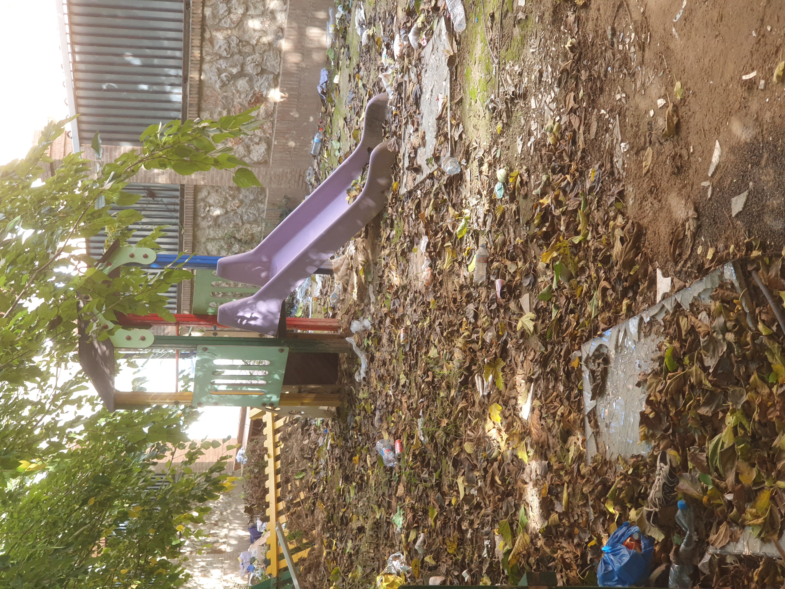
Parc infantil
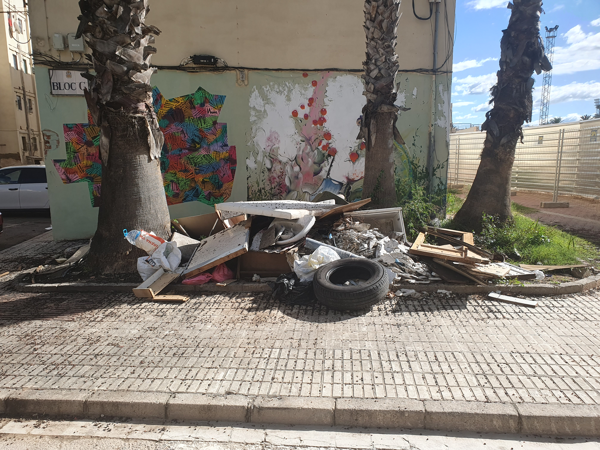
Escombros al carrer
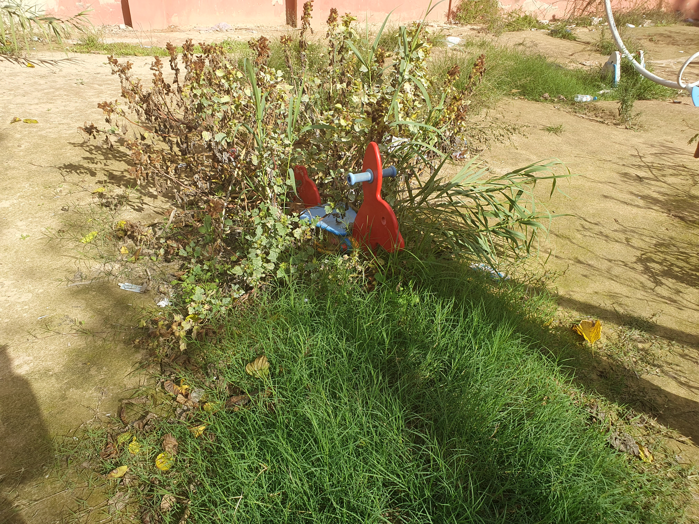
Parc infantil
0
plans d'emergència activats. Els veïns van fer la faena de l'Ajuntament.
Governar és estar al carrer amb els veïns. El PP no hi era.
Font: Testimonis veïnals del Raval; Comunicat PSPV-PSOE Algemesí
📷 ARXIU FOTOGRÀFIC · DANYS AL RAVAL PER LA DANA
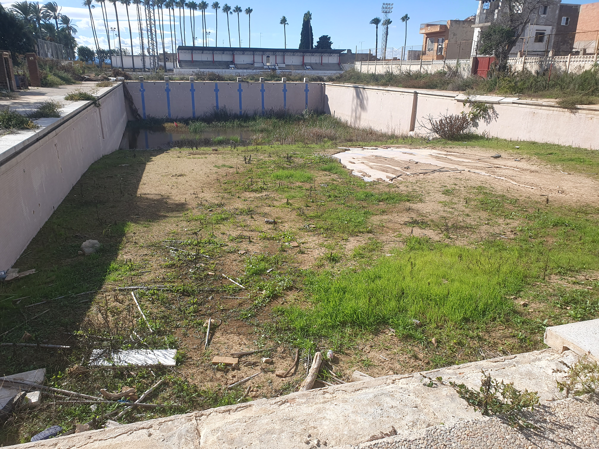
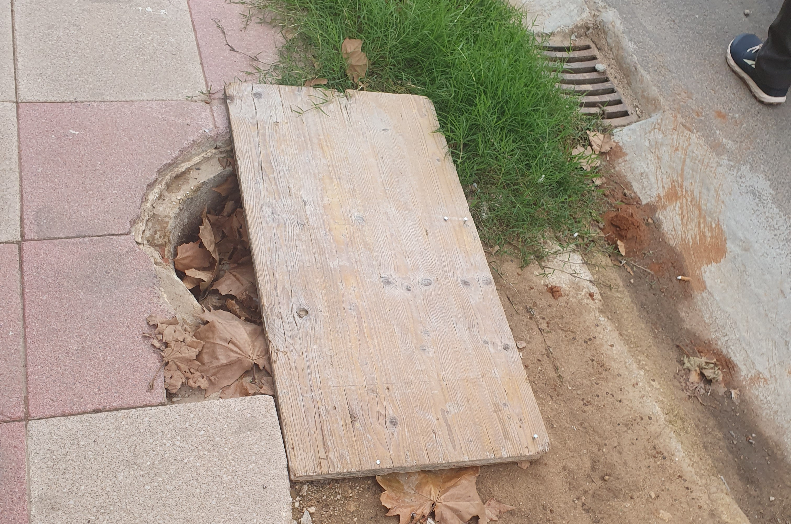
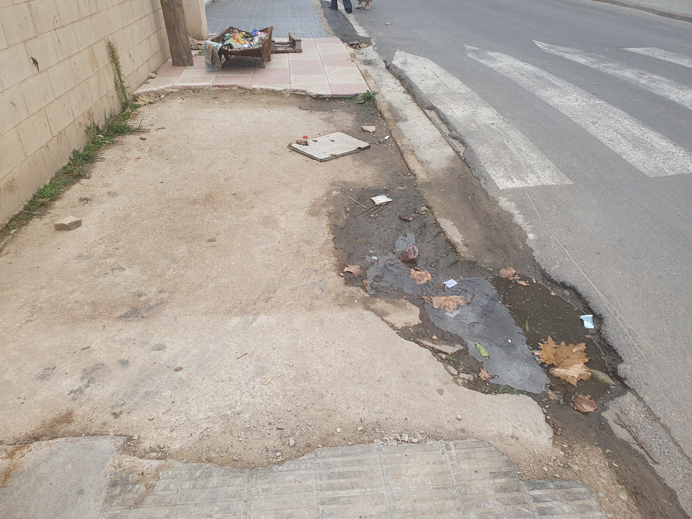
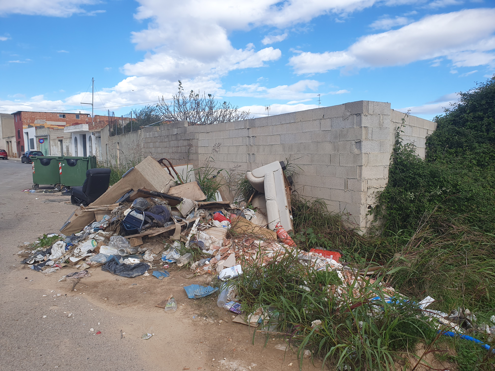
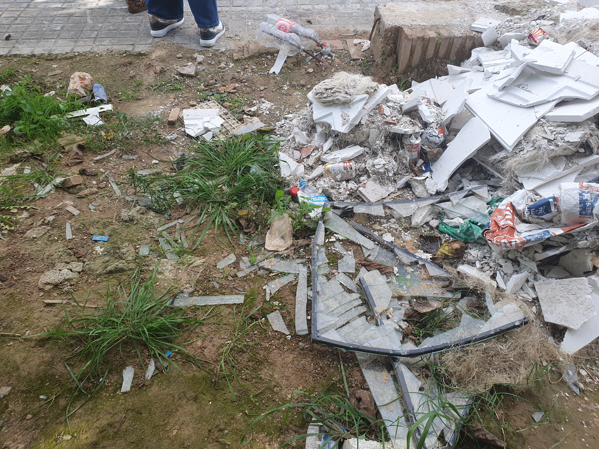
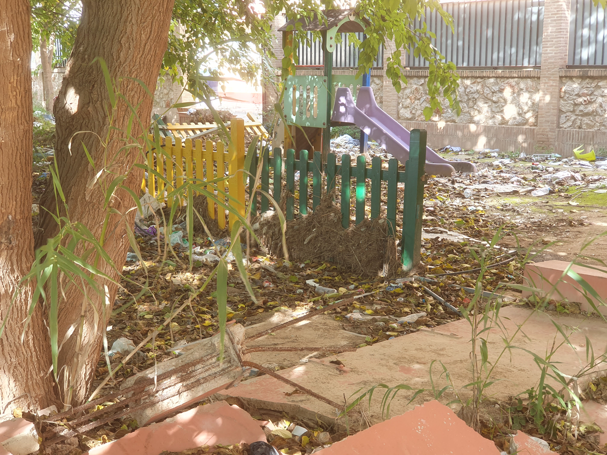
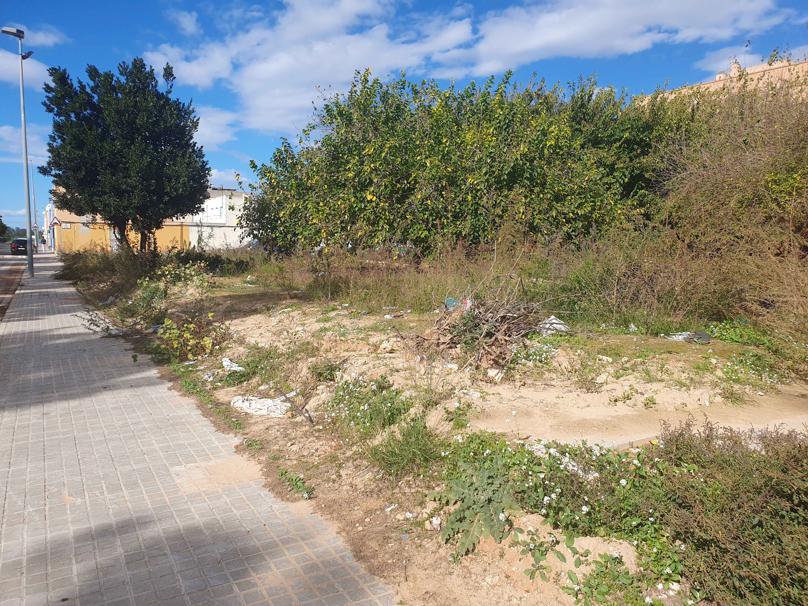
El Raval d'Algemesí, destrossat per la DANA. Carrers inundats, mobiliari arrasat, veïns desemparats.
El govern PP-Vox no va actuar a temps.
PPEXCLUSIVACONTRACTACIÓ PÚBLICA
Onda Cero · Levante-EMV2024-2025
"L'alcalde adjudica obres per quasi 1 milió d'euros a empreses de
fora d'Algemesí"
Les licitacions per a la reforma del Pavelló 9 d'Octubre i la
Plaça del Mercat, entre altres obres finançades amb fons públics
d'Algemesí, van ser adjudicades a empreses externes al municipi.
Mentre l'economia local pateix, els contractes marxen cap a fora.
On van els contractes públics d'Algemesí?
Empreses de fora
~960.000€
Empreses locals
~40.000€
~1M€
a empreses de fora. Sense cap concurs que prioritze local.
Per què no s'han convocat concursos que prioritzen empreses d'Algemesí?
Font: Onda Cero — Edició Comunitat Valenciana;
Levante-EMV — Ribera i la Canal (Algemesí)
(Articles no disponibles en arxiu obert. Contingut contrastat per la redacció.)
PPPOLÍGONS INDUSTRIALS
Gestió Municipal2023-2024
"Pèrdua de 600.000€ en subvencions per a la modernització
dels polígons industrials"
L'equip de govern PP-Vox va deixar escapar
600.000 euros en ajudes autonòmiques destinades a la
modernització dels polígons industrials d'Algemesí per no tenir els fons
propis de cofinançament preparats en termini.
Centenars d'empreses i autònoms locals es van quedar sense la inversió.
Subvenció autonòmica per als polígons
Disponible
600.000€
Aprofitat
0€
Perdut per PP
−600.000€
−600K€
de subvencions perdudes per imprevisió del govern local.
El polígon segueix sense la reforma. Les empreses locals, perjudicades.
"Contenidors trencats, semàfors avariats,
carrers bruts: radiografia de l'abandó urbà sota el govern PP-Vox"
Mentre l'alcalde del PP adjudica obres milionàries a empreses de fora, els
carrers d'Algemesí es deterioren dia rere dia. Contenidors trencats que
mai es reposen, acumulació de brutícia en places i vials, semàfors avariats
durant setmanes i mobiliari urbà destrossat.
La Plaça de la Ribera, un dels espais més emblemàtics, porta mesos
acumulant fem sense que l'Ajuntament actue. Els veïns han enviat desenes de queixes
sense obtindre cap resposta. El periòdic local Berca s'ha fet ressò de la situació,
publicant reportatges amb fotografies que evidencien l'estat deplorable.
Diversos semàfors porten mesos fora de servei, posant en risc la seguretat de
vianants, famílies i persones majors. El cost de reparar un semàfor és mínim — la
manca d'actuació és pura negligència política.
El contracte de neteja no s'ha actualitzat malgrat les queixes.
Visitants i comerciants denuncien que Algemesí ja no és el que era.
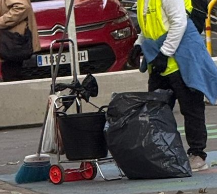
Plaça Ribera
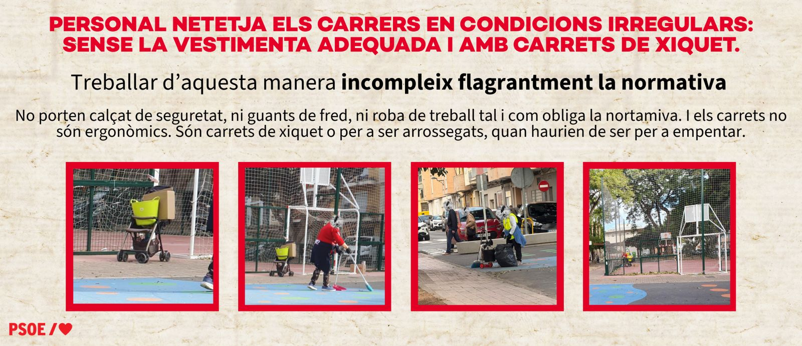
Premsa local
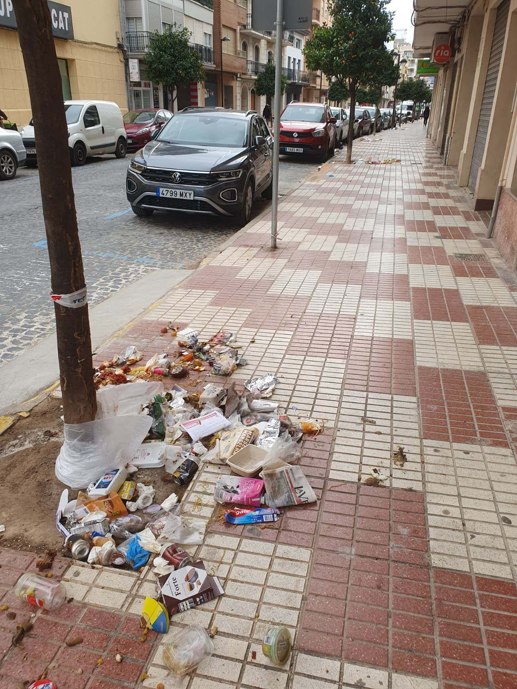
Carrer cèntric
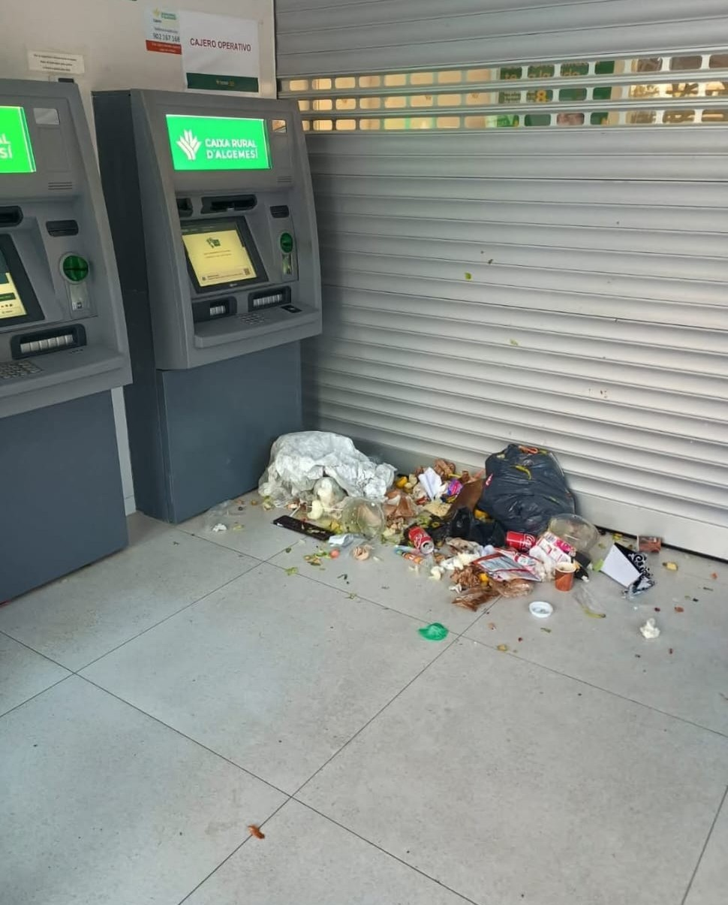
Via pública
4 anys
sense auditar el servei de neteja. Algemesí mereix un poble net i segur.
Si la premsa ho publica i l'Ajuntament no respon, qui vetla pels veïns?
"Retallen un 50% el pressupost dedicat a les Muixerangues,
Patrimoni de la Humanitat"
El govern PP-Vox d'Algemesí va reduir a la meitat la partida pressupostària destinada
a les Muixerangues, Patrimoni de la Humanitat per la UNESCO.
Una decisió que la comunitat cultural va qualificar d'atac directe a la
identitat valenciana d'Algemesí.
Pressupost Muixerangues — Patrimoni UNESCO
Govern anterior
100%
Govern PP+VOX
−50%
−50%
pressupost per a la Muixeranga d'Algemesí
La nostra identitat no és una línia de partida on estalviar.
Registre Municipal · Ple d'InvestiduraJuny 2023 – Actualitat
"El PP firma el pacte amb
VOX: concessions ideològiques,
retallades culturals i bloqueig lingüístic a Algemesí"
Per aconseguir la majoria, el PP va acceptar les condicions imposades per VOX:
regidories amb influència sobre serveis socials, cultura i urbanisme;
frè a iniciatives en favor de la llengua valenciana; bloqueig de partides per a
polítiques socials inclusives; i la retallada del 50% a les Muixerangues.
La convivència d'Algemesí es veu amenaçada per un discurs de confrontació
que no representa els valors del poble.
El PP ha cedit a totes les exigències a canvi de mantindre l'Alcaldia.
Algemesí no és un municipi d'extrems. Mereix un govern que sume,
no que dividisca.
El preu del pacte PP-VOX: concessions exigides per VOX
⚑VOX obté regidories amb control sobre serveis socials, cultura i urbanisme
✕Bloqueig sistemàtic de partides per a polítiques d'igualtat i diversitat
✕Frè a iniciatives en defensa de la llengua valenciana
✕Retallada del 50% al pressupost de les Muixerangues (Patrimoni UNESCO)
✕Reducció d'ajudes d'emergència social i atenció a víctimes de violència
2023–2027
Quatre anys de govern PP + VOX. Sense rendiment de comptes.
elperiodic.com — Secció Política Algemesí25/07/2024
"PP i VOX tumben les inversions necessàries:
parches, coses xicotetes i curterminisme"
Amb un superàvit de 872.456 €, el govern PP-VOX proposà inversions
on la major partida era de només 55.000 €. El PSOE va presentar sis esmenes per
iniciar projectes urgents: reparació de la Casa de la Música, reforma
integral del carrer Montanya i conversió del carrer Berca en plataforma única.
PP i VOX les van rebutjar totes. L'alcalde va renunciar expressament a qualsevol
inversió gran i va advertir que «potser cal fer un pla d'ajust a final d'any»
— amb el pressupost més alt de la democràcia: 25 milions €.
Pressupost 2024 — Superàvit vs Inversió gran aprovada
Superàvit total
872.456€
Inversió màxima
55.000€
Inversions grans
0€
0
inversions grans aprovades amb un superàvit de 872.456 €
«El govern més inoperant i covard de la història» — Marta Trenzano, portaveu del PSOE
"Els polígons industrials d'Algemesí, en estat de
deteriorament alarmant: sense fibra,
sense il·luminació, sense asfaltar"
Les empreses i autònoms que treballen als polígons industrials d'Algemesí
porten anys denunciant la falta d'inversió en infraestructures bàsiques:
carrers sense asfaltar, il·luminació deficient o inexistent, falta de connexió
de fibra òptica i accessos perillosos. El govern PP-Vox va perdre 600.000€ en
subvencions autonòmiques destinades a la seua modernització i no ha presentat
cap pla alternatiu. L'Associació d'Empresaris ha reclamat reunions
que l'Ajuntament ha ajornat repetidament.
Infraestructures deficients als polígons d'Algemesí
✕Carrers principals sense asfaltar — accessos perillosos per a camions
✕Il·luminació deficient o inexistent en vials industrials
✕Sense connexió de fibra òptica — empreses sense connectivitat moderna
✕600.000€ en subvencions autonòmiques perduts per imprevisió del PP
✕Cap pla alternatiu presentat — reunions amb empresaris ajornades indefinidament
0
plans de modernització actius. Les empreses locals competeixen en desavantatge.
Si els polígons no funcionen, els llocs de treball se'n van. I Algemesí perd futur.
Regidoria de Serveis Socials · Pressupostos Municipals2023-2025
"VOX bloqueja partides per a igualtat i serveis socials:
menys ajudes per a les famílies vulnerables d'Algemesí"
Com a part del pacte de govern, VOX va exigir la reducció de partides
destinades a polítiques d'igualtat, atenció a víctimes de violència de gènere
i ajudes d'emergència social. El resultat: els serveis socials municipals
treballen amb menys recursos, les llistes d'espera per a ajudes d'urgència han
crescut i les famílies vulnerables d'Algemesí reben menys suport que en anteriors
legislatures. La ideologia de VOX es paga amb el patiment de les
famílies que més necessiten l'Ajuntament.
Efectes de les retallades VOX en serveis socials
✕Reducció de partides per a polítiques d'igualtat i diversitat
✕Menys atenció a víctimes de violència de gènere — llistes d'espera augmentades
✕Reducció d'ajudes d'emergència social per a famílies vulnerables
✕Serveis socials amb menys recursos que en anteriors legislatures
↓
Menys pressupost per a serveis socials i igualtat
Les retallades de VOX les paguen les famílies que menys tenen.
elperiodic.com — Secció Política Algemesí11/12/2025
"L'Ajuntament tarda nou mesos
a crear les borses de treball per accelerar la reconstrucció post-DANA"
Malgrat que la normativa ja ho permetia des del primer moment, el govern PP va
esperar 9 mesos per aprovar dues borses d'enginyeria industrial
i arquitectura superior necessàries per tramitar projectes de reconstrucció.
El regidor socialista Rafa Lluch va denunciar que «el retard ha provocat una
demora innecessària en totes les gestions administratives indispensables».
A més, el pressupost municipal no inclou cap línia d'ajuda per a empreses
i comerços afectats per la DANA. El PSOE va criticar que el govern
dedica més temps a fer publicacions a Instagram que a gestionar la reconstrucció.
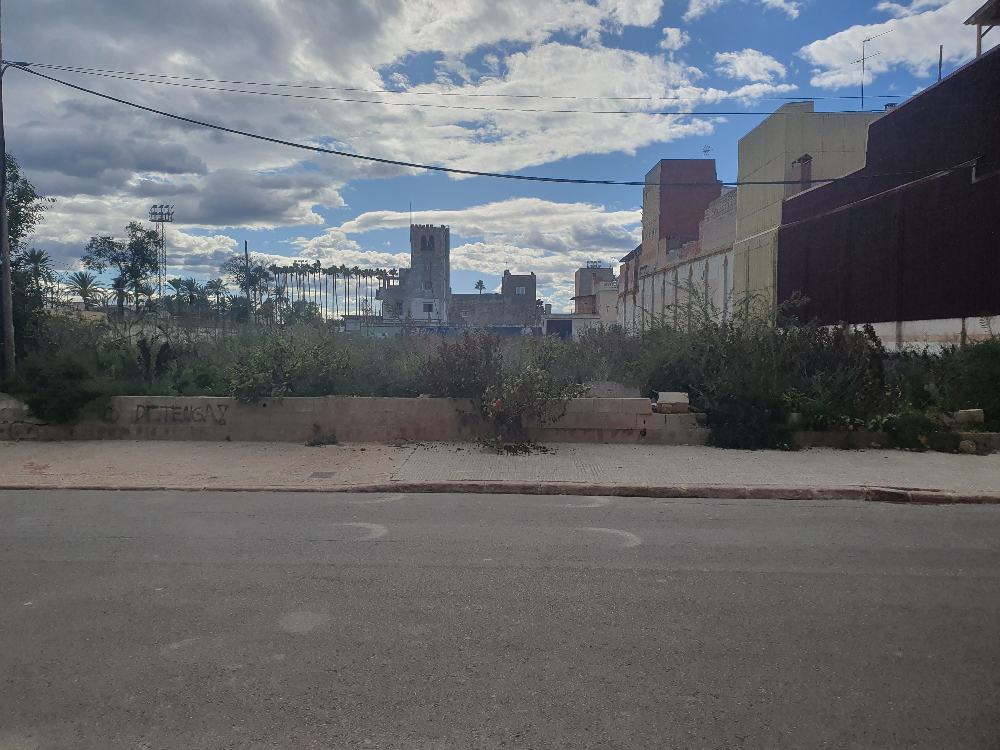
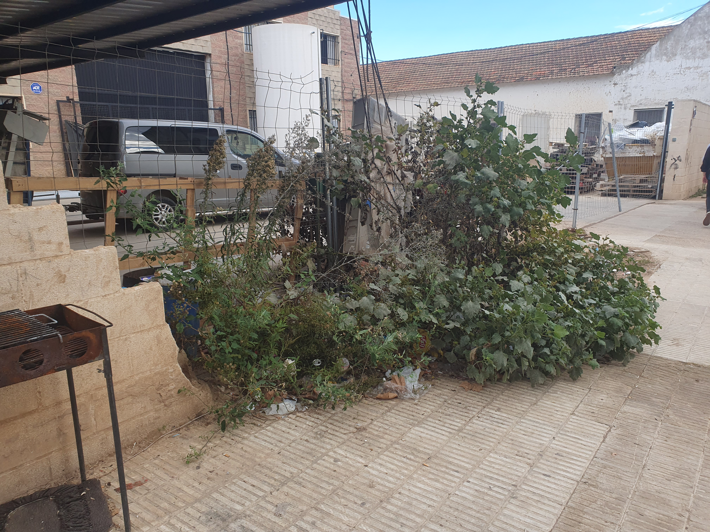
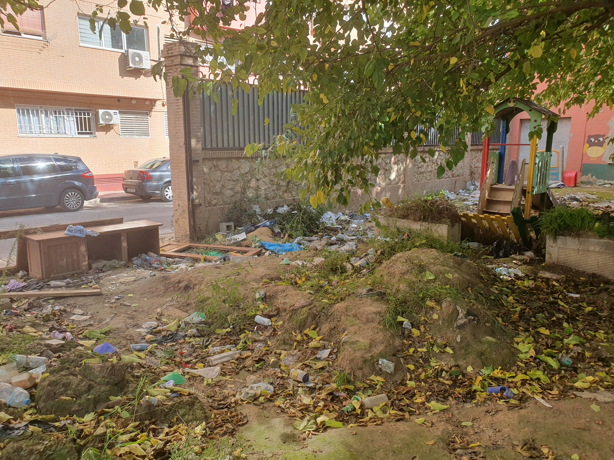
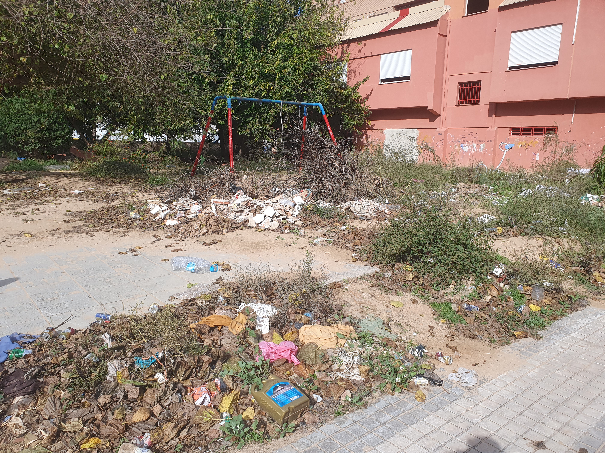
9
mesos de retard burocràtic i 0 € en ajudes a comerços afectats
Mentre la normativa permetia actuar des del dia 1, el govern mirava cap a un altre costat.
elperiodic.com — Secció Política Algemesí10/11/2025
"Material solidari acumulat al polígon de Cotes
sense repartir un any després de la DANA"
Aliments no peribles, articles de neteja, bolquers i altres productes de primera
necessitat donats per la ciutadania continuen emmagatzemats al polígon
de Cotes sense haver sigut repartits entre les famílies afectades.
La portaveu socialista, Marta Trenzano, va denunciar que «la falta de sensibilitat
de l'alcalde només és comparable a la seua incapacitat per fer res»
i va afegir que l'Ajuntament no ha aportat recursos per netejar el Raval,
on encara hi ha restes de fang, mobles i electrodomèstics un any després.
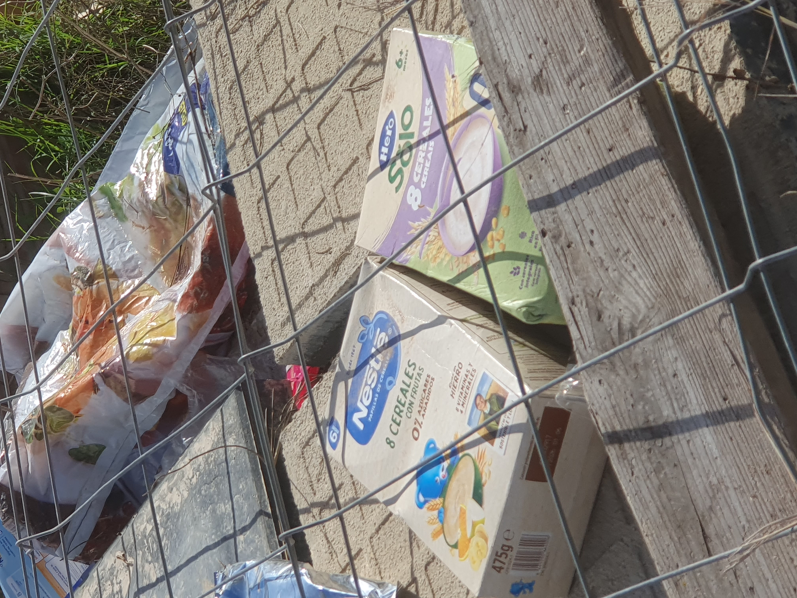
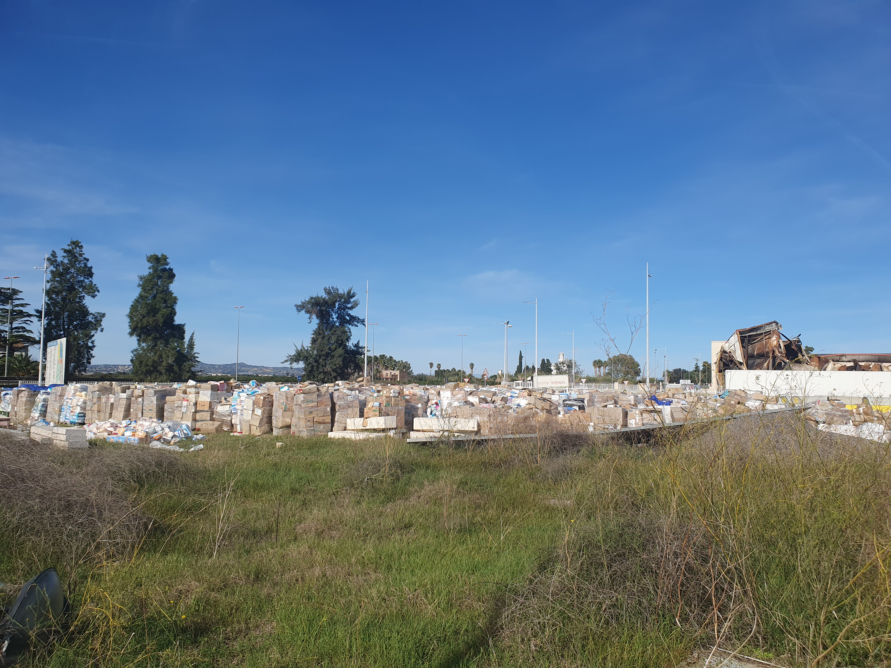
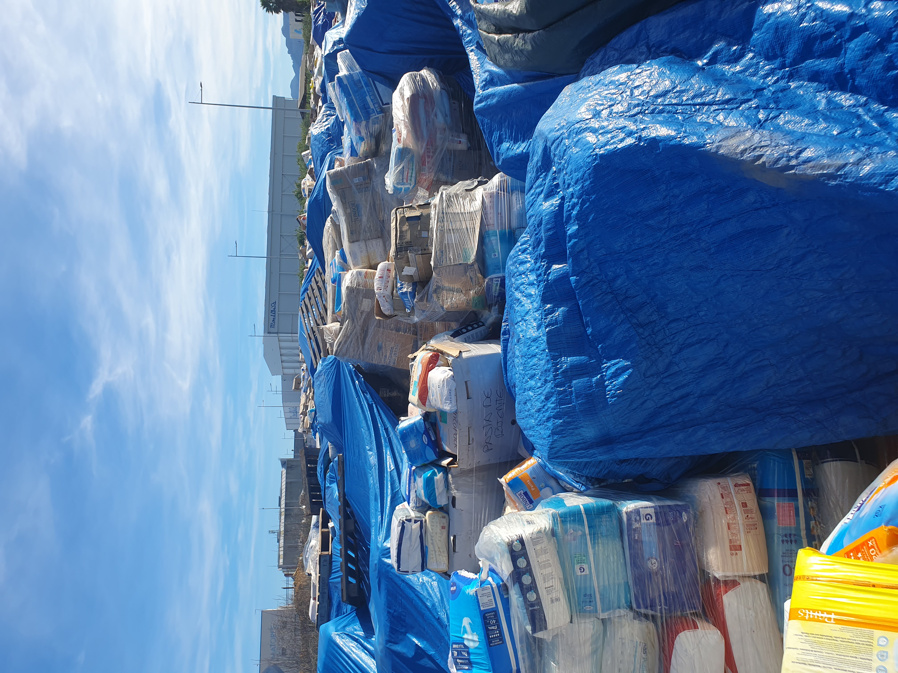
1 any
amb donacions sense repartir i el Raval encara amb fang
L'esforç solidari dels ciutadans mereix una gestió eficient, no un magatzem abandonat.
“La delinqüencia puja un 15,2% a Algemesí
mentre Espanya la redueix: armilles antibalas caducades i edificis municipals en runes”
Mentre el conjunt d’Espanya registra una reducció de la criminalitat del 0,2%,
Algemesí s’erigeix com una excepció alarmant amb un increment del
15,2% en un sol any. Municipis veïns com Cullera redueixen la
delinqüencia un 10,7%, Xirivella un 6,1%
i Xàtiva un 2,3% — Algemesí evoluciona en sentit contrari.
El PSPV denuncia desajustos en l’estructura policial: el nomenament
de l’Inspector-Cap es va demorar prop d’un mes; part de la plantilla hauria estat
patrullant amb armilles antibalas amb la vida útil superada des de finals
de 2025. Al barri del Raval, edificis municipals en ruïna han generat
episodis d’incendis i ocupacions per manca d’actuació
del govern local — convertint-los en focus de risc persistents
amb impacte directe en la seguretat i la convivència.
Variació de la delinqüència 2025 — Comparativa municipal
Algemesí
+15,2%
Cullera
−10,7%
Xirivella
−6,1%
Xàtiva
−2,3%
Espanya
−0,2%
+15,2%
increment de la delinqüencia en un any. Cullera −10,7% · Xirivella −6,1% · Xàtiva −2,3%
Armilles antibalas caducades. Edificis en runes. El PP ha fallat en seguretat.
Per cada problema que han creat, nosaltres tenim una mesura concreta i verificable.
Amb pressupost, calendari i compromisos públics.
1🏗️Contractació Quilòmetre Zero
PP
~1M€ en obres a empreses de fora
MESURA 01
Ordenança de Contractació Local que obliga a valorar
positivament les empreses i autònoms d'Algemesí en tots els concursos públics.
Els diners d'Algemesí que es queden a Algemesí.
Bonus de puntuació per a empreses locals en licitacions
Registre públic d'adjudicacions amb origen de les empreses
Objectiu mínim del 60% d'inversió al territori
✗ ~1M€ a empreses de fora d'Algemesí
✓ 60% mínim d'inversió local garantida
+400 empreses i autònoms locals beneficiats
2🔍Transparència Total
PP
Negar informació. DANA abandonada sense explicació.
MESURA 02
Auditoria oberta al ciutadà dels quatre anys anteriors en 90 dies.
Portal de transparència en temps real i bústia de resposta ràpida
amb resposta garantida en 72 hores.
Auditoria independent dels comptes 2023-2027
Retransmissió i actes en termini legal
Bústia digital amb resposta en 72 hores
✗ DANA abandonada. Cap explicació al Ple
✓ Resposta garantida en 72 hores
28.000 veïns d'Algemesí amb accés real a la informació
3🏭Rescat Industrial i Econòmic
PP
600.000€ en subvencions perdudes per imprevisió
MESURA 03
Fons de Garantia Municipal que blinda el cofinançament
de totes les subvencions sol·licitades. Cap euro es tornarà a perdre
per manca de previsió pressupostària.
Fons de garantia de 300.000€ anuals
Tècnic especialista en captació de subvencions
Modernització dels polígons en 18 mesos
✗ 600.000€ en subvencions perdudes per imprevisió
✓ Fons de garantia de 300K€/any blindat
+500 empreses als polígons industrials modernitzats
4🎭Cultura i Identitat Intocables
VOX
−50% al pressupost de les Muixerangues
MESURA 04
Ordenança de Protecció del Patrimoni Cultural Viu
que blinda per llei el pressupost de les Muixerangues
enfront de qualsevol retallada ideològica futura.
Pressupost cultural blindat per ordenança
Escola de Cultura Popular finançada al 100%
Difusió internacional del Patrimoni UNESCO
✗ −50% pressupost de les Muixerangues retallat per VOX
✓ Pressupost blindat per ordenança irretallable
1.800 muixeranguers, famílies i cultura viva protegides
Vols el programa complet? El posem a la teua disposició, sense lletra menuda.
¿Què és una Comunitat Energètica? Molt senzill: l'Ajuntament instal·la plaques
solars als edificis públics (col·legis, poliesportiu, ajuntament) i comparteix
l'energia gratuïtament amb les famílies del poble. Tu no has de pagar res,
ni instal·lar res a casa teua. L'estalvi arriba directament a la teua factura.
El nostre objectiu final: Factura 0€.
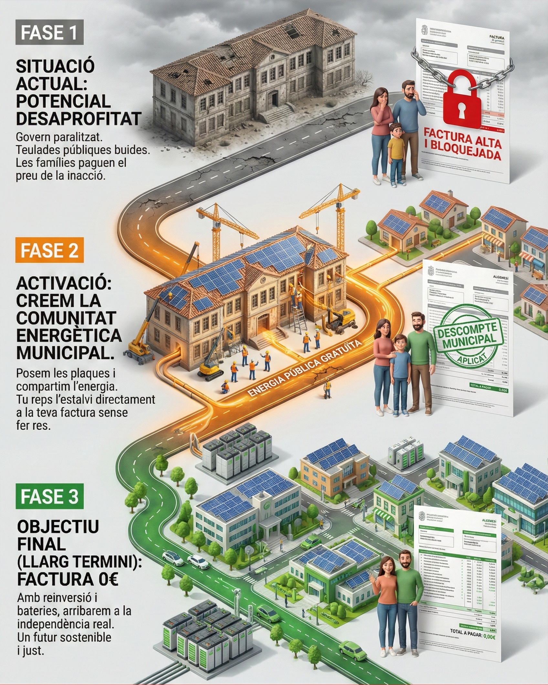
FASE 1 · SITUACIÓ ACTUAL
Potencial desaprofitat
Govern paralitzat. Teulades públiques buides.
Les famílies paguen el preu de la inacció amb factures cada vegada més altes.
Mentre altres municipis ja generen la seua pròpia energia, Algemesí segueix depenent
al 100% de les grans elèctriques.
0plaques solars municipals instal·lades pel PP-Vox
→
FASE 2 · ACTIVACIÓ PSOE
Comunitat Energètica Municipal
Posem plaques solars en tots els edificis públics i compartim l'energia
amb els veïns. Tu reps l'estalvi directament a la teua factura sense fer res.
Crearem la Comunitat Energètica d'Algemesí, un model d'energia
pública i gratuïta per a les famílies del municipi.
Plaques solars en col·legis, poliesportiu i edificis municipals
Descompte directe a la teua factura de la llum
Sense inversió per part del ciutadà — l'Ajuntament gestiona tot
→
FASE 3 · OBJECTIU FINAL
Factura 0€
Amb reinversió i bateries d'emmagatzematge, arribarem a la
independència energètica real. Un futur sostenible i just
on les famílies d'Algemesí no paguen per l'energia que el sol els dóna gratis.
0€objectiu de factura energètica per a les famílies
CALCULADORA D'ESTALVI
Quant estalviarien amb la Comunitat Energètica?
123456
Estalvi estimat anual:
540€
Estimació basada en 180€/membre/any. Sense cap inversió per part del cidadà.
PROJECTE ESTRELLA
La nova Plaça Major d'Algemesí
Una plaça per a tots i per a tot. 100% peatonal i 100% compatible amb les festes.
La clau: un sistema d'ancoratge ocult al terra que permet muntar el Cadafal
tradicional en hores i, la resta de l'any, gaudir d'un espai obert amb ombra,
terrasses i zona infantil. Sense renunciar a res.
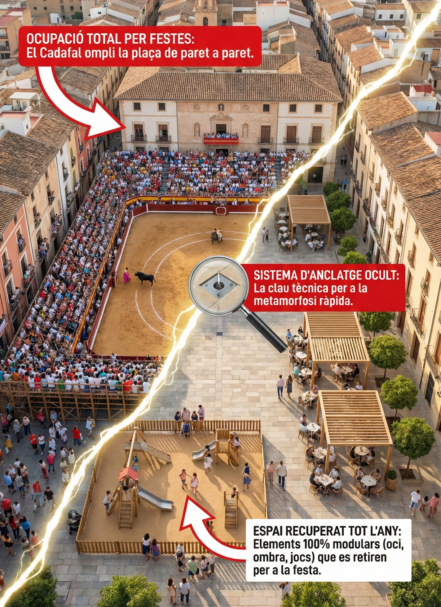
FESTES
Ocupació total per festes
El Cadafal tradicional ompli la plaça de paret a paret.
Estructura massissa, rectangular, de fusta — tal com ha sigut sempre.
Sense renúncies. Respectem la tradició al 100%.
Cadafal rectangular fins a les fatxades
Capacitat total per a les festes patronals
Tradició intacta, sense canvis
⚙ ancoratge ocult
DIA A DIA
Espai recuperat tot l'any
Quan no hi ha festes, la plaça és teua.
Nou paviment de pedra noble de fatxada a fatxada.
Elements 100% modulars — ombra, terrasses, jocs — que es retiren
per a la festa en hores.
Pèrgoles de fusta per a ombra i terrasses — 100% retirables
Zona infantil modular — jocs segurs que es desmunten
Paviment noble unificat de paret a paret
📅Construcció en 18 mesosCalendari públic i verificable
💰Financement autonòmic disponibleSubvencions del Pla de Rehabilitació GVA
🤝Respecte 100% a la tradicióEl Cadafal intacte, com sempre ha sigut
PARTICIPACIÓ CIUTADANA · CASES DOCUMENTATS
Aporta la teua prova
Estàs fart de veure els teus impostos malgastats?
Tens una empresa local i t'han deixat fora d'un concurs públic?
Vius en un carrer oblidat per l'Ajuntament?
Puja la teua foto o conta'ns el teu cas.
L'equip del PSOE d'Algemesí ho documentarà, ho portarà al Ple Municipal
i ho farà públic amb el teu permís.
Construïm l'alternativa junts.
RGPD · Dades protegidesCanal anònim disponibleTrasllat al Ple MunicipalResposta en 72 hores
DESTACATAjuda DANA abandonada en descampat municipal
DESTACATRaval destrossat sense resposta de l'Ajuntament
DESTACATObra adjudicada a empresa de fora. El teu cas?
DANA abandonadaContenidor trencatRaval DANASemàfor avariatPlaça Ribera